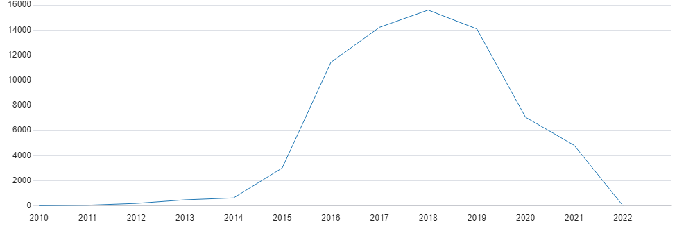

Food Service Inspection Violations
Introduction
I've worked in the restaurant industry, specifically fast food, for about 5 years. Three of those years I worked at Arby's as a shift lead. One of my jobs was to make sure we were following all proper food and service protocols (times, temperatures, hand washing, etc.) We would receive regular inspections from the county to make sure we were running as we should. This is some of the inspiration behind why I wanted to explore this data set from data.fultoncountyga.gov. This dataset contains violations of the Georgia Department of Public Health's Food Service Rules and Regulations reported by Fulton County Board of Health environmental health specialists during inspections of food service establishments between 2010 and 2022. Violations are identified by the code and abbreviated description of the violated rule as it appears on the inspection report form. In addition to the violation, the dataset includes detailed information on the inspection including the facility name, the facility address, the inspection date and time, and the overall score.
Questions and Hypotheses
Is there a section of Fulton County that has higher amounts of infractions?
I believe the obvious answer will be Atlanta. It is a major hub, not just for Georgia, but for the United States as a whole.
How do the amount of infractions change by year? Did COVID affect the rate?
I believe the amount of infractions will increase to 2019 as the area develops more and more, and then drop off due to COVID.
Which facility or chain of facilities had the highest number of infractions?
I believe it will be a chain of restaurants, most likely in the fast food sector. I predict McDonald's as it is one of the biggest chains by location total.
What is the most common type of infraction?
At Arby's I recall always losing points on clean/sanitized counters. I believe this might be a universal problem for all facilities.
Does the type of foodborne illness risk tied to an infraction affect overall score?
I belive the obvious thought is that higher risk infractions hold a greater weight on a facility's score. Rather than the most total infractions, I think the most level 3 infractions will determine some of the worst offending facilities
Analysis
Let's explore our first question. Let's see which cities in Fulton County have the most infractions. We will take the top 10 for simplicity.
As expected, the amount of infractions in Atlanta towers over all other cities. Atlanta is much more developed and has way more facilities than any other city, so it's bound to have more infractions. Now, let's see how the total amount of infractions have changed by year in Fulton County.
Our second hypothesis was correct. I believe a limitation to this data set is that it does not capture the entire 2010 and 2022 year. We can consider those drop offs artificial. I have reason to suspect that the dataset was not complete through 2014, as fewer than 1000 infractions through all cities seems strange. Let's however take a look at the following years. As I suspected, there was a peak in infraction total in 2018. 2019 onward saw a sharp decline in infraction totals. I highly suspect this was due to COVID. Restaurants closed, fast-food went drive-thru only, there were less customers and business activity as a whole; there are many factors that could have contributed to this decline.
Now, let's take a look and see which facility/chain had the highest number of infractions. We will take the top 20 for simplicity.
Wow! My hypothesis was incorrect. Subway takes the lead at a whopping 935 infractions! As expected though, the top infraction holders are from restaurant chains/multi-store locations. More locations, more infractions. Out of curiosity, I wanted to explore what was happening with Subway and why they had so many infractions.
It seems the top infraction for Subway is improper cold holding temperatures. I imagine this either has to do with their food refrigerator or their cold-well line. Considering the cold-well is a major part of Subway, these results don't suprise me. Let's see if our initial hypothesis of food contact surface infractions in the grand scheme is correct. We will take the list of the top 10.
Just as I suspected! In fact, the top three infractions are all contact surface related. Looking at these top infractions can definetly help businesses decide where to focus on employee training. One of the big lessons at Arby's that was taught was CAYG, clean as you go!
Infractions are scaled by risk_type from 1 to 3, where 3 is the highest chance and infractions can spread a foodborne illness. Let's see how each risk can affect a facility's score.
Right now, we are looking at the lowest average scores that include the following infractions. We can see a large volume of type 3's applied to these infractions. Clearly, the more level 3 infractions you have, the lower a facility's score will be.
Let's analyze one more thing! I think we can find places to avoid in Fulton County by seeing which facilities have the highest count of type 3 infractions.
Coming in first place (Or might you call last place) is Ginya Izakaya with 34 type 3 infractions! Something interesting, however, is when we look at the average score for this list, the lowest one (this is actually the lowest average score of all facilities with type 3 infractions) is Satto Thai and Sushi Bar. With 25 level 3 infractions, and an average score of 45, this is definetly a restaurant one might want to avoid! One more interesting thing to note, is that this list is mostly made up of seafood/asian facilities. This would be interesting to look into for future analysis.